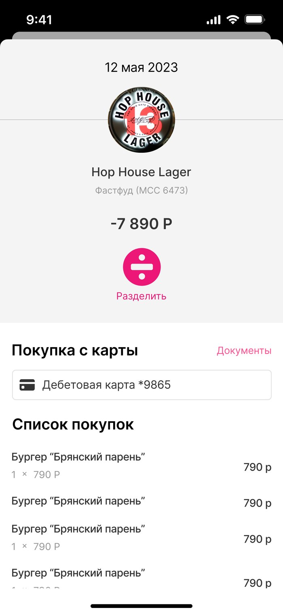
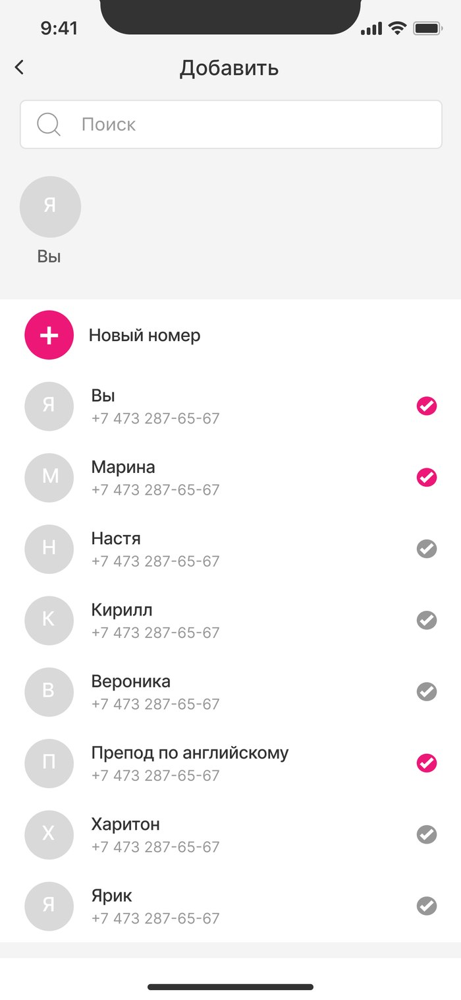
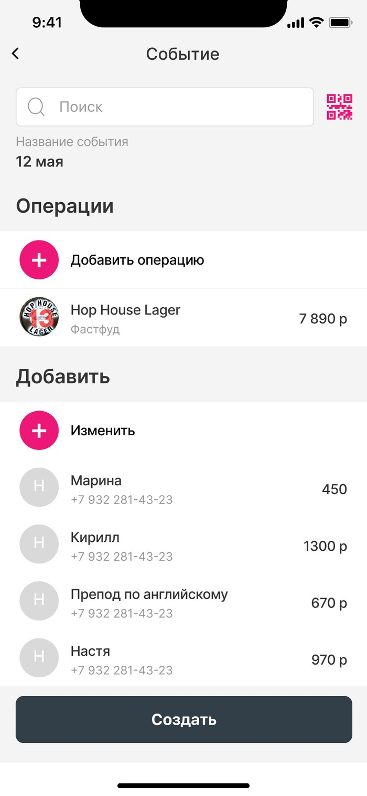
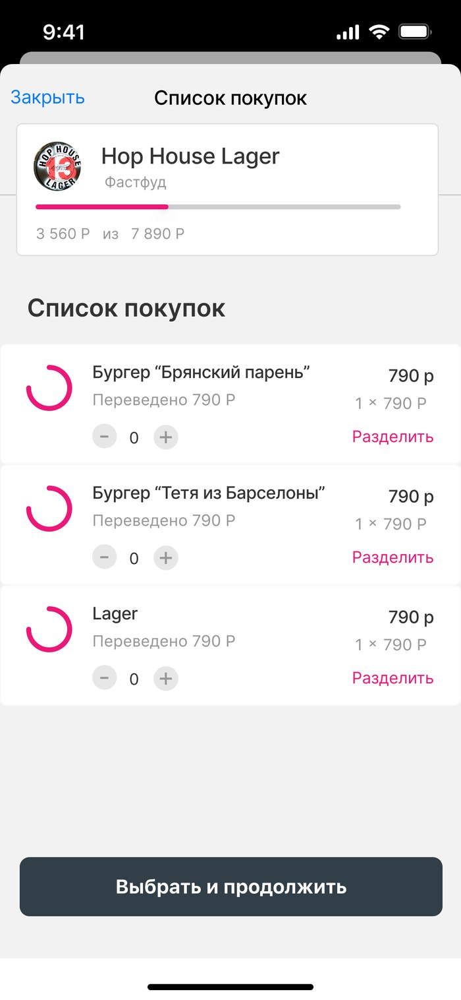
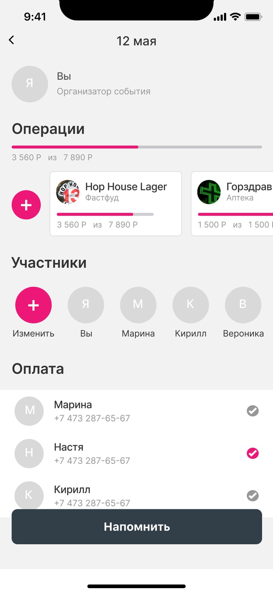

Функция мобильного приложения Ренессанс Банка, спроектированная на хакатоне, — разделить общий счёт между друзьями вплоть до конкретных позиций чека и собрать деньги в одном месте.
В рамках хакатона, организованного Ренессанс Банком совместно с НИУ МЭИ, нужно было за ограниченное время спроектировать и представить новую функцию мобильного банковского приложения. Пользователи банка нередко оказываются в ситуациях, когда нужно поделить общую сумму — счёт в кафе, поездку, покупки в складчину, — и делают это вручную: переводами по отдельности и подсчётами в переписке. Задачей команды было предложить решение, которое закрывает этот сценарий прямо внутри приложения банка.
Обсудили, в каких ситуациях люди чаще всего делят счета и что вызывает больше всего трения: сумму на всех редко нужно делить поровну — кто-то заказал больше, кто-то присоединился позже, — а простое деление на количество человек не отражает реальные доли. Решили, что в основе функции должно быть разделение не общей суммы, а конкретных позиций чека.
Спроектировала флоу «Скинулись» на примере реальной покупки — счёта в баре на 7890 ₽. Вход в функцию сделала в двух точках: через раздел «Платежи» и прямо с карточки транзакции в истории операций — «Разделить» появляется как быстрое действие сразу под суммой покупки, чтобы не заставлять пользователя искать функцию отдельно.


Дальше пользователь создаёт «событие» — например, «12 мая» — и добавляет туда участников из контактов. К одному событию можно привязать несколько операций сразу: в примере — счёт в баре и покупку в аптеке, если друзья скидывались на оба сразу. Внутри каждой операции можно выбрать способ деления: поровну или по позициям чека — каждый участник отмечает, что из списка покупок заказывал именно он, и сумма пересчитывается автоматически. Прогресс-бар показывает, сколько из общей суммы уже собрано.


Для участников, которые забыли перевести свою часть, добавила кнопку «Напомнить» на экране события — организатор может подтолкнуть конкретного человека, не переписываясь с ним отдельно. Статус оплаты каждого участника виден сразу в общем списке — оплачено или ещё нет.

Готовый прототип команда защищала в формате питча перед жюри хакатона.
За отведённое время команда подготовила рабочий прототип функции «Скинулись» — от создания события и деления счёта по позициям чека до напоминаний неплательщикам — и представила его на защите жюри хакатона. Полную версию кейса с макетами выложила на Behance (ссылка выше).